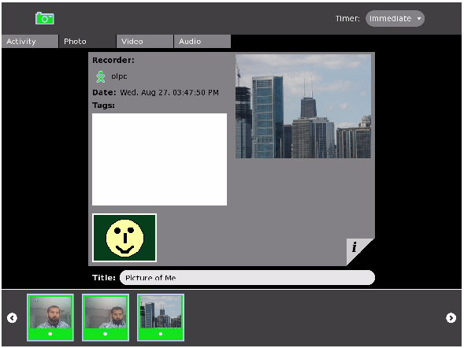
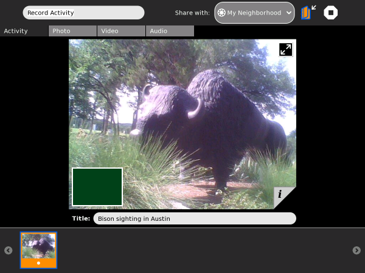
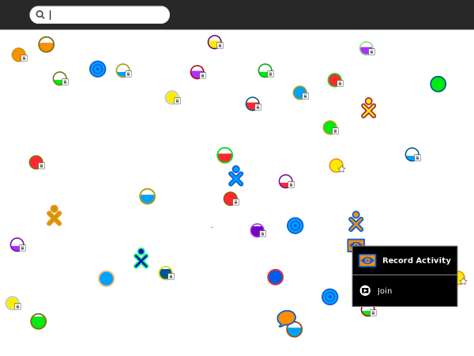
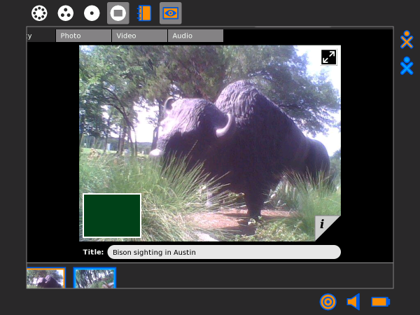

Record¶
About¶
The Record Activity is used for recording audio and video and for taking pictures. You will need to have a built in camera and microphone to use these features. If your computer only has a microphone and no camera then you can only use the Record Activity to record audio.
Record can be used for :
- Taking pictures
- Recording video
- Recording audio
- Stop-motion photography
- Time-lapse photography
- Creating 360° panoramas
- Viewing slide shows
- Storing extra information about audio, video, and pictures
Record stores images and audio in the Journal, from which they can be used by other activities, such as Draw, Write, Etoys, and Browse, as well as Memorize and some other games. Also, images can be transferred to a USB storage device from the Journal by “drag and drop”.
Taking Photos¶
You can use the Record Activity to take photographs of the world around you. The screenshot below highlights some of the key controls available in the main Photo Tab.
Let’s look at some specific details about the items highlighted above:
- This item shows the Photo Tab has been highlighted. This means that the Record Activity is in photo capture mode and all of the controls you see now reflect this.
- Record allows users to set a timer before recording happens. In this case, the timer is a pulldown menu that allows you to chose among three options: “Immediate”, “5 Seconds”, and “10 Seconds”. Delaying the timer might be useful if you want to give yourself some time to get to the right pose before the Record Activity takes a snapshot.
- You often see a double arrow at the top right corner of your picture window. This arrow puts record into full screen mode, where everything is hidden except the picture window and the record button (item 4 below). In full screen mode, you can navigate the pointer to the top right corner and a similar icon pops up to allow you to return to normal mode.
- This is the button that tells the Record Activity to start recording. In Photo mode, Record takes a snapshot of whatever is in front of the camera.
- The area between the left and right arrows is called the tray. It is where previously recorded items are placed so that you can look at them later on.
Once Record successfully takes a photo, it shows up as an icon on the tray. You can click the icon to view the photo and to update information about that picture.

In the Photo View screenshot above, item 1 shows how the tray displays a history of your previously taken photos. When you click on a photo, you are taken to the interface you see in the screenshot, which includes a text field where you can name your photo (item 2). You also see the image taken by your camera (in this case, the skyline of Chicago). Item 3 is a small output window of what your camera sees (in this case, a very happy student!). If you click on this small window, you are returned to the main photo screen from which you can take more pictures.
Item 4 on the bottom right of your image is a little tab that allows you to find out even more about the photo that was taken. The screenshot below shows the new window that appears. Here, you can read and enter new ‘tags’ for your image, and find out about when the picture was taken and by whom. A tag is a single word that helps categorise or describe the photo.
As with the photo view window, you have the output of your camera on the bottom left. You can click this to go back to taking photos.
Video¶
When you click the Video Tab, the Record Activity goes into video recording mode. Much of this process is very similar to recording photos: recorded videos show up in the tray at the bottom, you can name and tag your videos just as you name and tag photos, and you have many of the same controls for going in to fullscreen mode and navigating between video recording and viewing modes.
The screen capture below helps us to highlight a couple of items that are different or noteworthy in video mode.

Notice that there are two control menus. Item 1 is a delay timer just like the one used on photo mode: it lets you delay the start of recording several seconds so you can get ready in front of the camera. The duration menu (item 2) allows you to specify a maximum length for your video. In the current implementation, you can record videos of 2, 4 or 6 minutes.
Once you are ready to record, click the button in item 3. When you finish recording, you should see your video show up in area 4. You can then click on the video to view it, name it, and update/view the tags assigned to the video.
Audio¶
The Record Activity also allows you to record Audio. To do so, you simply go to the Audio Tab in the Activity.

If you have a camera, an image appears in the picture window and looks like live video.

Don’t worry... this is only saved as a snapshot to help identify your audio recording.
The controls for audio recording are virtually identical to that of video recording. You have “Timer” and “Duration” controls that allow you to specify when and for how long your voice is recorded. You also have a tray at the bottom of the Activity that allows you to browse and view details of previously recorded audio.
To start recording press the button at the bottom:

Your recording starts:
You can either leave the audio recording to run until it is complete or you can stop it by pressing on the same icon you pressed to start it. As with the photo and video modes, you see an icon for your recording show up once you are done. You can click this icon to edit the name and tags assigned to your new audio recording.
To replay the audio click the icon of the recording at the bottom of the page.

Sharing Media¶
You can share photos, video and audio recordings (these can just be refered to as ‘media’) with your friends. To share media you must first have some media in the bottom tray. In our example we have the image of a Bison (see below) in the tray. Now select the Activity Tab on the left and the Record Activity looks something like this:
You then see on the right the text “Share with:”. To the right of this is a drop-down menu. Change the selection here to “My Neighborhood” as shown:
Others looking at the Neighborhood View see your icon with an ‘eye’ (the Record Activity icon) next to it:

Others can now join your Activity and you can share your media with them.
Joining the Record Activity¶
Once you have shared your Record Activity others need to do the following to join. From the Neighborhood View, they need to click the ‘eye’ icon next to your icon:
They must then choose ‘Join’ and their Record Activity opens with your images in their tray. In the Record Activity, thumbnails of photographs are shared. The photograph’s frame is in the same colors as the XO icon of the person who took the photo.
On your Frame, you can see the icons of all of the people with whom you are collaborating. You can also see their shared media.
You can exit a shared Activity at any time.
Things to Try with Record¶
You can easily take pictures and make videos by using a built-in camera for still photography and video recording. You can also use the camera for video conferencing, which involves talking to others on a video screen knowing that the others can also view your video.
You can express yourself with sound, images, and video using the cameras and microphones. You are learning about light, observations, angle, and perspective. By recording the sights and sounds around you, others can learn about you, your culture, and environment. You can communicate with your voice and pictures. You can tell factual or emotional stories with film or pictures to help change perceptions or take action.
You could also try some of the following :
- Use the Record Activity to record your voice with a built-in microphone.
- Take a photo of where you live by aiming the camera lens at your home, and then clicking the circle icon.
- Record sounds of your city or town.
- Record and leave messages for your family.
- Teachers - record a message for parents.
- Interview your friends and record it to audio or video.
- Make a video diary.
- Open your photos in the Paint Activity and draw on them.
- Add your pictures to a story using Write.
- Upload a picture to Flickr or Wikimedia Commons.
- Attach a picture to an e-mail you send to a friend or family member.
- Take a picture of a flower or plant from the same place every day to show how it changes.
- Take a picture of a baby animal every week to show how it grows.
| author: | © Faisal Anwar 2008 adam hyde 2008 Caryl Bigenho 2008 Tom Boyle 2008 |
|---|